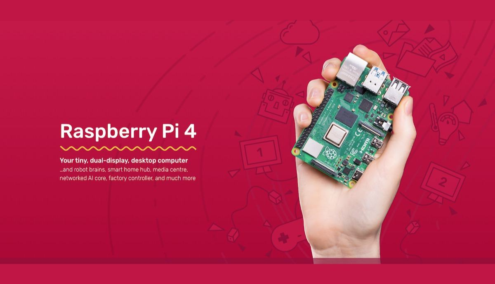

Learn Raspberry Pi 4
Guidance for Beginners


What is the Raspberry Pi?
The Raspberry Pi is popularly known as the $35 credit-card sized computer. Although this device does not have the same specs as your PC or laptop, it can be a great tool for makers. Thousands of people worldwide use the board to explore computing, and to learn how to program languages like Scratch and Python.
History
Created by Eben Upton, the first Raspberry Pi prototype was very different from the Raspberry Pi 4. The Raspberry Pi foundation is headquartered in the United Kingdom and seeks to spread physical computing to schools and developing countries.
Specifications
- Broadcom BCM2711, Quad core Cortex-A72 (ARM v8) 64-bit SoC @ 1.5GHz
- 1GB, 2GB or 4GB LPDDR4-3200 SDRAM (depending on model)
- 2.4 GHz and 5.0 GHz IEEE 802.11ac wireless, Bluetooth 5.0, BLE
- Gigabit Ethernet
- 2 USB 3.0 ports; 2 USB 2.0 ports.
- Raspberry Pi standard 40 pin GPIO header (fully backwards compatible with previous boards)
- 2 × micro-HDMI ports (up to 4kp60 supported)
- 2-lane MIPI DSI display port
- 2-lane MIPI CSI camera port
- 4-pole stereo audio and composite video port
- H.265 (4kp60 decode), H264 (1080p60 decode, 1080p30 encode)
- OpenGL ES 3.0 graphics
- 5V DC via USB-C connector (minimum 3A*)
- 5V DC via GPIO header (minimum 3A*)
- Power over Ethernet (PoE) enabled (requires separate PoE HAT)
- Operating temperature: 0 – 50 degrees C ambient